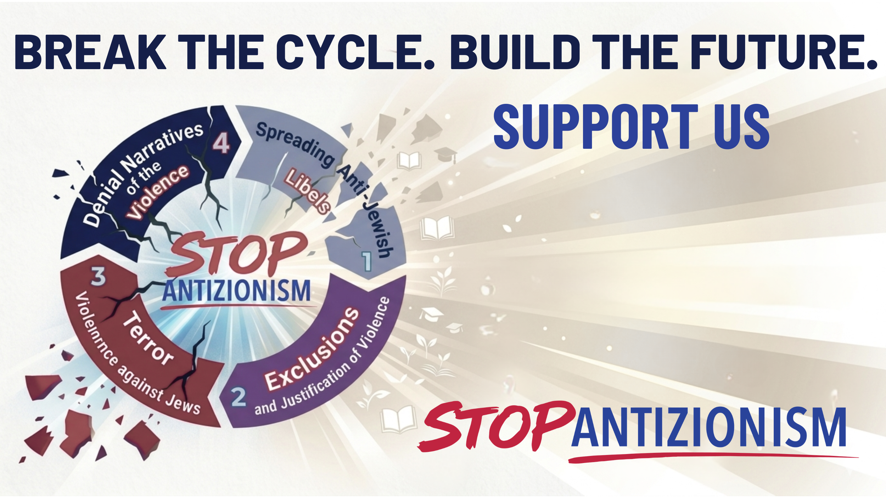

World Symposium Against Antizionism
Thank You for Making
WSAA 2026 Historic
A historic intervention into the third era of Jew-hatred.
Thank You for Making WSAA 2026 Historic
A historic intervention into the third era of Jew-hatred.
The 2026 symposium was not the finish line. It was the beginning.
BE PART OF HISTORY
CONTACT US FOR 2027 SYMPOSIUM SPONSORSHIP
THIS IS THE MOMENT TO LEAD.
Historic. Urgent. Mobilizing.
NOW - Let’s Build 2027
The first-ever World Symposium Against Antizionism (WSAA) is officially in the books, and what a day it was.
First, we would like to thank our sponsors for this incredible historic event.
To everyone who attended, watched, shared, and supported:
THANK YOU.
Together, we brought scholars, advocates, and leaders together for a full day of dialogue and action that we believe marks a turning point.
MEDIA COVERAGE OF THE SYMPOSIUM

NATIONAL POST
American pundit told symposium antizionism is ideology 'built on lies'
JEWISH NEWS SYNDICATE (JNS)
Toronto hosts symposium examining antizionism as a modern -day Jew-hatred.
THE HUB
Reject Evil - 5 Takeaways from Ben Shapiro’s keynote at the World Symposium Against Antizioinism
CANADALAND BY JESSE BROWN
Canadian media has a narrative for Jews. This event didn’t fit it.
SYMPOSIUM PANEL VIDEO RECORDINGS & KEYNOTE PRESENTATIONS
What is Antizionism - genealogy and institutionalization of Anizionism
Islamic Antizionism - Voices that will not be silenced
Antizionism in Law - Legal voices of justice
Antizionism in Education - The fight for academic integrity
Alternative Media - Antizionism beyond the mainstream
Next Generation Future Advocates
Weaponized Narratives - How disinformation fueling antizionism
Antizionism as a Civilizational Crisis with Ben Shapiro
Educational Breakthrough
One of the most meaningful breakthroughs we showcased was Stop Antizionism work with Associated Hebrew Schools of Toronto on the Cycle of Libels and the Role of Token Jews.
This world state-of-the-art educational framework helps students recognize recurring patterns of demonization, identify manipulation, and develop the critical thinking and moral resilience skills needed to break the cycle of dehumanization before it reaches universities and broader institutions.
This is how cycles of hatred are broken: by giving people the tools to understand how demonization works, how recurring libels are normalized, and how to confront them with confidence and moral clarity.
BREAK THE CYCLE.
BUILD THE FUTURE.
Big Ideas, Real Impact.
Dr. Naya Lekht
Scholar, writer, educator — Decoding Antizionism: The Soviet BlueprintDr. Lekht is the co-founder of Stop Antizionism and the developer of the “Three-Era Framework of Jew-Hatred,” which traces the evolution of anti-Jewish hostility from religious anti-Judaism to modern antisemitism and contemporary antizionism. Her work examines how ideological narratives transform across time and adapt to shifting moral vocabularies. In 2024, she was named a top 25 Young Zionist ViZionaries by JNF and the Jerusalem Post. Dr.
Naya Lekht is a scholar, educator, and writer specializing in the history of antisemitism, Jewish identity, and Soviet intellectual history. She earned her PhD in Russian Literature from UCLA, where her research focused on the suppression of Holocaust memory and Jewish identity in the Soviet Union.
Natasha Pein
Natasha Pein is a researcher, educator, speaker, and writer focused on contemporary antisemitism and the global rise of antizionism. Born in the former Soviet Union, she grew up amid state-sponsored antisemitism and antizionist propaganda, shaping her lifelong commitment to defending Jewish identity and truth. Now based in Canada, she works to expose and counter modern forms of Jew-hatred.. Natasha explores the media narratives, and ideological movements shaping public discourse.
Her work examines how language, propaganda, and digital platforms influence perceptions of Israel and Jewish identity. Through her analysis and commentary, she contributes to broader efforts to expose and challenge the evolving forms of antizionism in academic, media, and public spaces.
Voices That Will Not Be Silenced — The advocates and voices
Rawan Osman
Syrian-born, Germany-based activist, writer, and speaker who advocates for Arab-Israeli normalization and combating antisemitism. Raised in Lebanon amid anti-Israel sentiment, she moved to Europe in 2011, where her views gradually shifted through personal experience and study.
She identifies as an "Arab Zionist" and founded Arabs Ask, a social media platform launched after October 7, 2023 to counter misinformation and foster dialogue about Judaism and Israel in the Arab world. Her work spans activism, media, and education — including collaboration with organizations like Sharaka and the Center for Peace Communications, appearances at the UN Human Rights Council, and participation in Holocaust remembrance events.
Osman is also a content creator, documentary contributor (Tragic Awakening), and is currently writing a book about her evolving views. She continues to live in Germany, studying Islamic and Jewish studies, and remains a prominent and sometimes controversial voice on Middle East coexistence and identity.
Loay Alshareef
Loay Alshareef is a Saudi-born peace activist and linguist who advocates for the normalization of relations between the Arab world and Israel. Raised in a deeply religious household in Jeddah where he was taught to harbor antisemitic views, Alshareef’s perspective shifted after living with a Jewish host family while studying in France.
Now based in Abu Dhabi, he uses his platform to promote the Abraham Accords and argues that Zionism—the right of Jews to self-determination in their ancestral homeland—is supported by Islamic texts. A vocal critic of Hamas, Alshareef frequently creates content in Arabic to educate his followers on Jewish history and the importance of coexistence in the Middle East All Israel News.
Abraham Hamra
Abraham Hamra is a Syrian-Jewish attorney and activist who uses his unique perspective as a Damascus-born refugee to advocate for Israel and combat antisemitism. Through viral content in both English and Arabic, he challenges the "white colonizer" narrative by highlighting the indigenous history of Mizrahi Jews in the Middle East. Known for his unapologetic style, Hamra recently filed a libel lawsuit against Al Jazeera and launched "BEIT DEBATE" to foster internal Jewish unity and resilience.
Ali Siadatan
Ali Siadatan is a Canadian-Iranian educator, commentator, and Head of Education and Strategy at the Toronto-based Tafsik organization. Born in Iran, his early experiences in the post-revolutionary environment inform his focus on political and cultural issues. In addition to his educational and advocacy work, he is a longtime martial artist with a black belt in Kung Fu, integrating physical training with philosophical development.
Siadatan is also active in media and public discourse, contributing commentary on ideology, the Middle East, and Western society, and working as a consultant and speaker.
Naming The Threat
Dr. Casey Babb
Dr. Casey Babb is a Toronto-based international security expert, academic, and public commentator specializing in terrorism, cyber conflict, and Middle East affairs. He is a Senior Fellow at the Macdonald-Laurier Institute and holds fellowships with leading global institutions, including the Royal United Services Institute (UK) and the Institute for National Security Studies in Tel Aviv. Dr.
Babb teaches international security and terrorism studies at Carleton University’s Norman Paterson School of International Affairs, where his work focuses on emerging threats such as cyber warfare, artificial intelligence in conflict, and contemporary antisemitism.
Recognized as one of Canada’s leading voices on national security and antisemitism, Dr. Babb has published widely in academic journals and major media outlets across North America and Europe. He is a frequent contributor to The Globe and Mail, National Post, The Jerusalem Post, and The Times of Israel, and a regular commentator on global media platforms including CNN, BBC, CBC, FOX News, and CTV.
Jesse Brown
Jesse Brown is a visionary Canadian media entrepreneur and pioneering journalist who transformed the country’s media landscape by founding Canadaland, a thriving, listener-supported news network. He gained national acclaim for his courageous co-reporting on the Jian Ghomeshi investigation and demonstrated remarkable digital innovation as a co-founder of Bitstrips, the avatar app later acquired by Snapchat for $100 million.
By championing transparency and providing a platform for silenced voices, Brown has empowered a new generation of independent journalists to pursue impactful storytelling and remains a dedicated advocate for a more honest and accountable Canadian press.
The Battle for Academic Integrity
Dr. Gad Saad
An evolutionary psychologist, professor, and bestselling author known for his bold commentary on human behavior, culture, and the impact of ideology on modern society. A professor at Concordia University’s John Molson School of Business, his academic work focuses on evolutionary psychology, consumer behavior, and decision-making.
He rose to international prominence through his bestselling books The Parasitic Mind and The Saad Truth About Happiness, where he critiques ideological extremism and champions reason, science, and individual liberty.
Beyond academia, Dr. Saad is a widely recognized public intellectual and host of The Saad Truth podcast, engaging global audiences on culture, politics, and psychology. He has appeared on major media platforms, including The Joe Rogan Experience, and is known for his unapologetic defense of free expression. His upcoming book, Suicidal Empathy: Dying to Be Kind, continues his exploration of cultural and psychological trends, examining the unintended consequences of empathy taken to extremes.
All VIP's will receive a signed copy of Gad Saad's newest book at the event, along with the meet & greet!
Dr. Brandy Shufutinsky
Brandy Shufutinsky serves as director of FDD's Program on Education and National Security. She has been published in Newsweek, Jewish Journal, the New York Post, The Jerusalem Post, Sapir, White Rose Magazine, and JNS. Brandy holds her doctorate in international and multicultural education from the University of San Francisco, her MSW from the University of Southern California, and her M.A. in international relations from the University of San Diego.
The Next Generation Rises
Anastasia Zorchinsky
Anastasia Zorchinsky is a Montreal-based student leader and co-founder of StartUp Nation Montreal at Concordia and McGill. A three-term Concordia Student Union Councillor, she works on campus policy around safety and accountability, and has engaged with Members of Parliament on national advocacy. She gained media attention in November 2025 after publicly challenging the Canadian government's refusal to recognize Israel as her birthplace on her passport, earning coverage from CBC and the National Post.
A recipient of multiple national leadership awards, she's recognized for building student institutions and advocating for diverse communities.
The Moderate Case (Jacob Smith)
“The Moderate Case” is the pseudonym of Jacob Smith, a Christian Zionist writer and commentator focused on Jewish identity, Zionism, and contemporary antisemitism Writing primarily on platforms like Substack and social media, he presents a centrist or “moderate” defense of Zionism, aiming to counter both extreme rhetoric and what he views as distortions in mainstream discourse.
His work often blends political analysis, historical context, and personal reflection, with a focus on how antisemitism manifests in modern ideological movements. Smith has built a following for his clear, accessible style and his effort to articulate a reasoned, middle-ground perspective in highly polarized debates. Smith has built a substantial following online, with his essays widely shared among pro-Israel and Jewish advocacy communities.
He is particularly known for articulating arguments that resonate beyond traditional Jewish audiences, bridging gaps between communities and reframing complex issues in a way that is digestible and persuasive. His ability to combine moral framing with strategic communication has made his writing influential in shaping moderate pro-Zionist narratives in digital spaces.
Eyal Yakoby
Eyal Yakoby, a recent graduate of the University of Pennsylvania with a degree in Political Science and Modern Middle East Studies and an incoming student at MIT, is a prominent voice on issues of radicalism and extremism. He spoke at a House Congressional leadership press conference in 2023 and testified before the House Judiciary Committee in 2024.
Yakoby has appeared on TV networks, including CNN, ABC, and Fox, and has contributed to publications such as The Washington Post, New York Times, and The New York Post. .
The Courtroom Fights Back - Voices of Justice
Matthew Schweber
Matthew S. Schweber is a New York–based attorney with over 30 years of experience across commercial litigation, employment law, intellectual property, and family law. Admitted to the New York State Bar in 1995, he previously worked at major firms including Cravath and Weil, Gotshal & Manges. He is currently counsel at Feuerstein Kulick LLP, where he focuses in part on cannabis law, advising clients and investors in the sector since 2012.
Schweber is also active in legal thought leadership and professional organizations such as the New York State Bar Association and the National Cannabis Bar Association.
Dr. Rona Kaufman
An American legal scholar and lawyer serving as Associate Professor of Law at Duquesne University's Thomas R. Kline School of Law, where she teaches constitutional law, employment discrimination, family law, and gender and the law.
Her scholarship focuses on the intersection of law with gender, motherhood, antisemitism, and Jewish identity, with publications in journals including the Buffalo Law Review and the Wisconsin Journal of Law, Gender & Society. Before academia, she practiced commercial, family, and employment law at major U.S. firms, later completing a fellowship at Temple University and earning a master's in legal education.
Beyond teaching, Kaufman is a prominent voice on antisemitism and civil rights, co-founding the Center for Jewish Law & Policy and contributing to anti-discrimination initiatives.
Rabbi Mark Goldfeder
An American legal scholar, attorney, and public advocate working at the intersection of law, religion, and international affairs. He serves as CEO and Director of the National Jewish Advocacy Center (NJAC), leading litigation and policy efforts to combat antisemitism and advance civil rights and religious freedom.
A distinguished academic, he teaches at Touro Law Center and has held roles at Emory University School of Law and the Center for the Study of Law and Religion. He is a prolific author, publishing in major outlets including The Wall Street Journal, Forbes, and CNN, and is co-author of the multi-volume treatise Religious Organizations and the Law.
Goldfeder's influence extends into international policy — he has advised Israel's Permanent Mission to the UN, contributed to matters before the International Criminal Court, and was appointed to the United States Holocaust Memorial Museum Council, making him one of the leading legal voices on religious liberty and antisemitism today.
Leora Shemesh
A prominent Toronto-based criminal defence lawyer and a leading figure in Canadian criminal law. A graduate of Osgoode Hall Law School (2000), she earned top honours including the Gale Cup Mooting Competition and the Stephen Leggett Award in Criminal Law.
Over her career, Shemesh has built a respected practice defending constitutional rights under the Canadian Charter of Rights and Freedoms, appearing at all levels of court. She founded her own firm in 2006 and is recognized for her involvement in landmark cases — most notably contributing to R. v. Hitzig related to marijuana legalization — as well as challenging police practices and defending clients in serious matters including homicide and sexual assault.
Beyond the courtroom, she lectures at Osgoode Hall Law School and mentors emerging criminal lawyers. In 2025, she was named one of Toronto Life's Top 50 Most Influential Torontonians, reflecting her outsized impact on both the legal landscape and the protection of civil liberties in Canada.
Beyond the Mainstream: Media That Tells the Truth
Eve Barlow
Eve Barlow is an LA-based writer, thought leader and Jewish intellectual. She is the creator of the bestselling Substack newsletter Blacklisted. Eve is formerly a music and culture journalist. She was Deputy Editor of the NME and freelanced for New York Magazine, The Guardian, Billboard, LA Times, Pitchfork, and GQ, among many other publications.
Nick Matau
Nick Matau is a content creator, activist, and U.S. Navy veteran who served on fast-attack nuclear-powered submarines. He focuses on cutting through misinformation and media bias surrounding Israel, Zionism, and the region’s complex past, as well as actively discussing historical context and promoting balanced dialogue through live debates most nights for the past four to five years.
Emily Austin
An American sports journalist and political commentator who gained traction during COVID-19 by interviewing athletes on social media, leading to work with Sports Illustrated, MTV, and DAZN. She hosts the NBA podcast The Hoop Chat with Emily Austin and has a strong social media presence. Beyond sports, she's become a notable conservative voice, has attended events at the U.S. Capitol, and in 2023 served as a media consultant for Israel's Permanent Mission to the UN.
She's also been active in speaking out on antisemitism and international affairs.
How Disinformation Fuels Hate — Weaponized Narratives
Ben Cohen
Ben Cohen is the Director of Rapid Response at the Foundation for Defense of Democracies. His areas of expertise include Middle Eastern politics, the United Nations and the history of antisemitism and antizionism. A former BBC journalist, he writes for the New York Post, the Daily Wire, the National Review and the Jewish News Syndicate, where he contributes a weekly column.
His book and book contributions include "Some of My Best Friends: A Journey Through 21st Century Antisemitism," (2014) and "Anti-Judaism, Antisemitism and Delegitimizing Israel" (2016)."
Pamela Paresky
Dr. Pamela Paresky is a social psychologist with a background in both clinical psychology and human development. She is an Associate in the psychology department at Harvard University and has taught at Johns Hopkins, the University of Chicago and the United States Air Force Academy. She serves as a Senior Fellow at the Network Contagion Research Institute, an Advisor to the Mindful Education Lab at NYU, and a Senior Advisor at the Open Therapy Institute.
She is the author of the guided journal, A Year of Kindness and was the primary researcher and in-house editor for The Coddling of the American Mind. Her work has appeared in The New York Times, Quillette, Politico, Sapir, Psychology Today, the Jewish Journal, and elsewhere. She is also the founder of the Free Mind Foundation, whose mission is to create spaces where people can think and speak freely while building real friendships, even across lines of difference.
James Lindsay
Dr. James Lindsay is an author, mathematician, and political commentator who has written eight books covering education, postmodern theory, and critical race theory. He is the founder of New Discourses, an organization dedicated to promoting objective truth in public discourse. His notable works include the co-authored Cynical Theories, as well as Race Marxism and The Marxification of Education. Dr.
Lindsay has been featured on major media platforms such as Fox News, Glenn Beck, Joe Rogan, and NPR, and has delivered talks at prominent venues including the Oxford Union and the European Parliament.